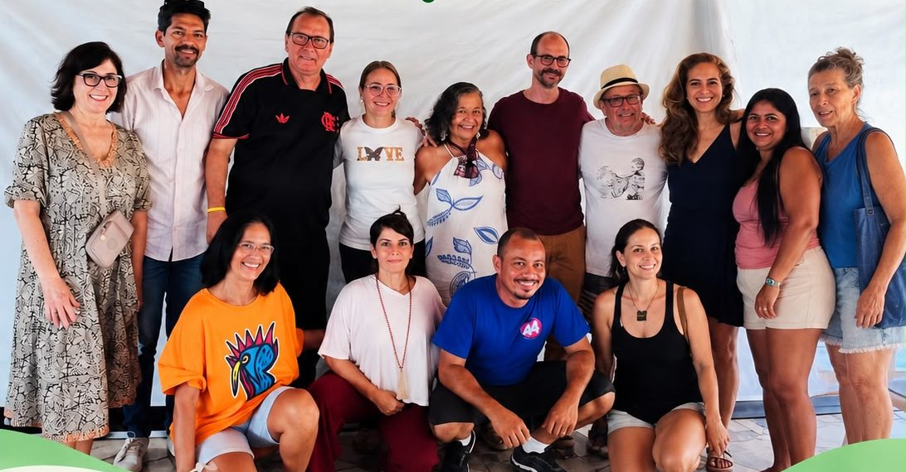
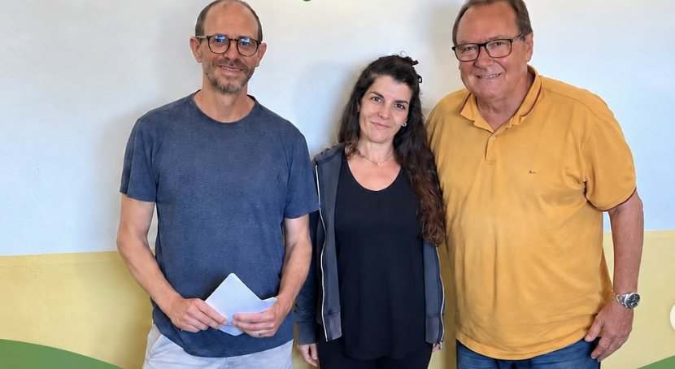

Domingo, 13 de setembro de 2026, no Sargi — como foi a conversa da comunidade com a prefeita Magnólia Barreto e o administrador de Serra Grande, Moacir Leite, e o que ficou de encaminhamento.

A comunidade reunida com a Prefeitura no Sargi, em 13 de setembro de 2026.
No domingo, 13 de setembro, moradores e proprietários do Sargi e do Pé de Serra receberam a prefeita Magnólia Barreto, o administrador de Serra Grande, Moacir Leite, e vereadores para uma conversa aberta sobre o IPTU. O encontro foi organizado pela ASMOVISA a partir do trabalho do Grupo de Trabalho do IPTU e da proposta formal entregue à Prefeitura em 4 de setembro (Ofício nº 02/2026).
Quando: 13 de setembro de 2026, das 11h às 13h Onde: Sargi Quem participou: moradores e proprietários, a prefeita Magnólia Barreto, o administrador Moacir Leite e vereadores Organização: ASMOVISA / GT IPTU
Como foi a reunião
O que a ASMOVISA apresentou
O problema: aumentos abruptos do IPTU em 2025 e 2026, acúmulo de dívidas e risco à permanência de moradores antigos no bairro.
A proposta: partir do valor de referência de 2024 e aplicar, a cada ano, o acréscimo de até 20% previsto na Lei 546/2014, mais a correção pelo IPCA. Para o lote de referência (376 m² de terreno e 169 m² de construção), o IPTU de 2026 ficaria em cerca de R$ 1.090.
O pedido: que uma nova Planta Genérica de Valores seja aprovada por lei, com estudo técnico, audiência pública e participação da Câmara — e não por decreto.
O que a Prefeitura respondeu (segundo o administrador Moacir Leite)
A Lei de 2014 fixava R$ 120/m² de terreno no Sargi, mas esse valor não teria sido aplicado pelas gestões anteriores.
Para 2025, os valores teriam sido atualizados pelo IPCA (R$ 228,11/m² no terreno e R$ 273,73/m² na construção). Para 2026, foram lançados R$ 240/m² e R$ 1.000/m².
O administrador assumiu a responsabilidade e reconheceu que o erro foi o salto excessivo em dois anos, e não os valores em si.
Contraproposta: atualizar os valores de 2014 pelo IPCA, o que resultaria em cerca de R$ 1.320 para o mesmo lote — R$ 230 acima da referência da ASMOVISA. Ele sugeriu buscar a convergência entre as duas propostas.
Alíquotas vigentes informadas: 2% para terreno sem construção e 1% para terreno com construção. A revisão das alíquotas foi reconhecida como um ponto legítimo de discussão.
A prefeita afirmou disposição para ouvir a comunidade e buscar um denominador comum.
O que a comunidade pediu
Uma comissão participativa, estudo de mercado e votação dos valores.
Aumentos graduais e alíquotas entre 0,5% e 1%, com revisão da alíquota de 2% para terrenos.
Previsibilidade, comunicação prévia e participação da comunidade antes de decisões de impacto.
Uma solução que contemple também quem não tem condições de pagar.
Que os compromissos sejam cumpridos após o período eleitoral.
Encaminhamentos da reunião
O que ficou combinado ao final do encontro:
Buscar a convergência entre a referência da ASMOVISA (cerca de R$ 1.090) e a da Prefeitura (cerca de R$ 1.320).
Incluir a revisão das alíquotas na discussão para o próximo exercício.
Construir uma nova PGV aprovada por lei, com debate público e participação da Câmara.
Nova reunião entre ASMOVISA, Prefeitura e Câmara após o período eleitoral.
Os vereadores Jardel e Adé se comprometeram a participar das reuniões da ASMOVISA e a acompanhar a pauta na Câmara.
Depois da reunião: os valores comunicados pela Prefeitura

A diretoria da ASMOVISA com o administrador de Serra Grande, Moacir Leite, na conversa em que a Prefeitura comunicou os novos valores.
Na sequência da reunião, a Prefeitura comunicou à diretoria da ASMOVISA os valores por metro quadrado que passarão a valer para o Sargi e o Pé de Serra:
Zona
Terreno (R$/m²)
Construção (R$/m²)
Pé de Serra Litoral
R$ 300
R$ 1.000
Pé de Serra Central
R$ 200
R$ 250
Sargi Litoral
R$ 300
R$ 1.000
Sargi Central
R$ 200
R$ 250
Sargi Continental
R$ 180
R$ 215
A tabela acima traz os valores por m² (terreno e construção) que a Prefeitura comunicou para o Sargi e o Pé de Serra — são os que vão aparecer na guia. Foi uma negociação específica para essas localidades; os valores de outros bairros também estão mudando, mas não há uma regra única — cada um tem os seus.
Os detalhes completos virão com a publicação do novo decreto, que, pela sinalização que recebemos, deve sair ainda esta semana.
Nosso papel foi receber essa proposta e trazê-la como informação. Avaliamos como um bom resultado em termos de valor, que facilita o pagamento por mais moradores. Ainda assim, os questionamentos jurídicos apresentados na reunião permanecem, e a decisão sobre o pagamento cabe a cada morador ou proprietário.
Seguimos defendendo que uma solução duradoura não se resolve só por decreto: continua em aberto o debate por uma nova lei, com estudos técnicos e participação da comunidade.
→ O prazo de pagamento do IPTU 2026 segue prorrogado para 30 de outubro, com desconto à vista e parcelamento em 3x com 10% de desconto (Decreto nº 1.257/2026).
Quer fortalecer esse trabalho? Entre no Grupo de Trabalho do IPTU e cadastre-se como associado(a).
Fontes: notas da reunião pública de 13/9/2026 no Sargi; Ofício ASMOVISA 02/2026; Decreto Municipal 1.257/2026.
ASMOVISA — Uruçuca/BA · setembro de 2026